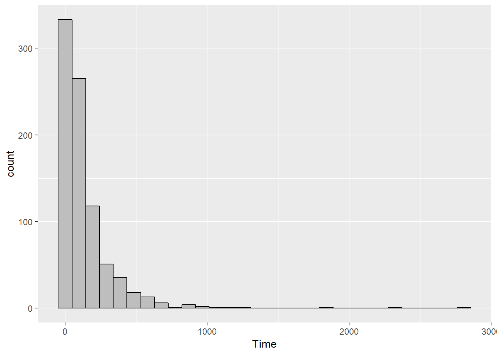
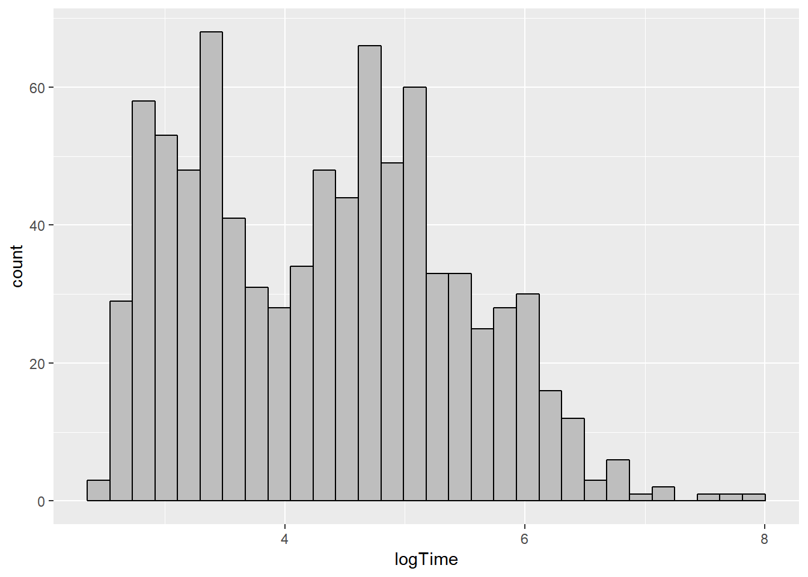
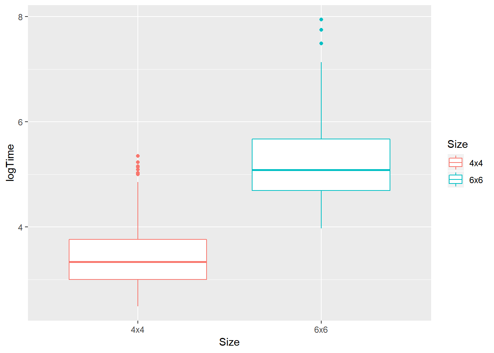
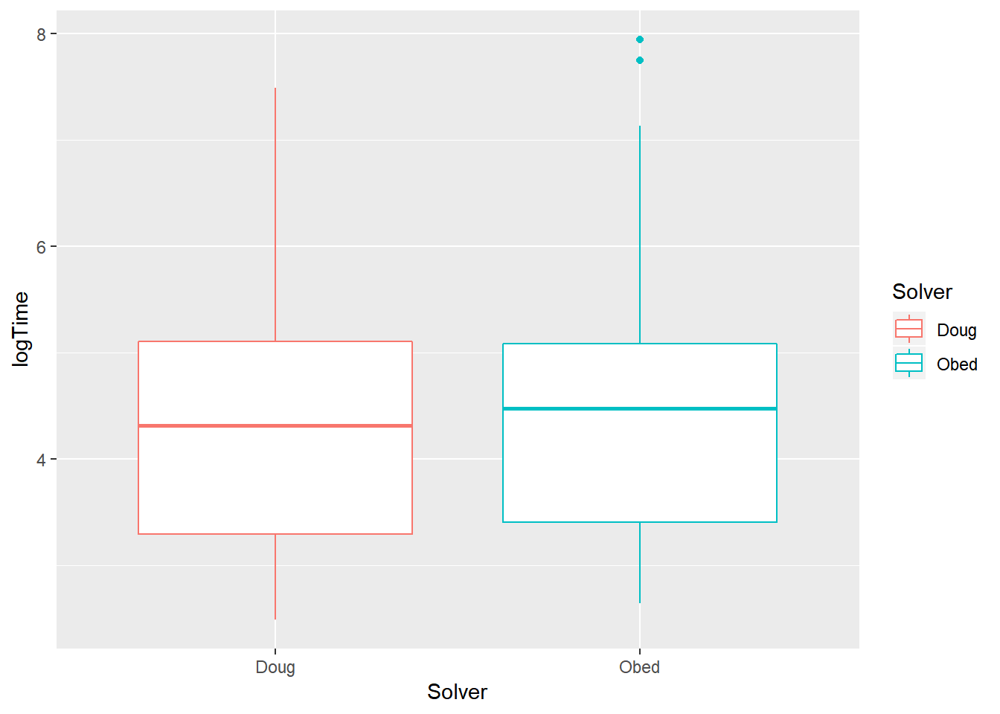
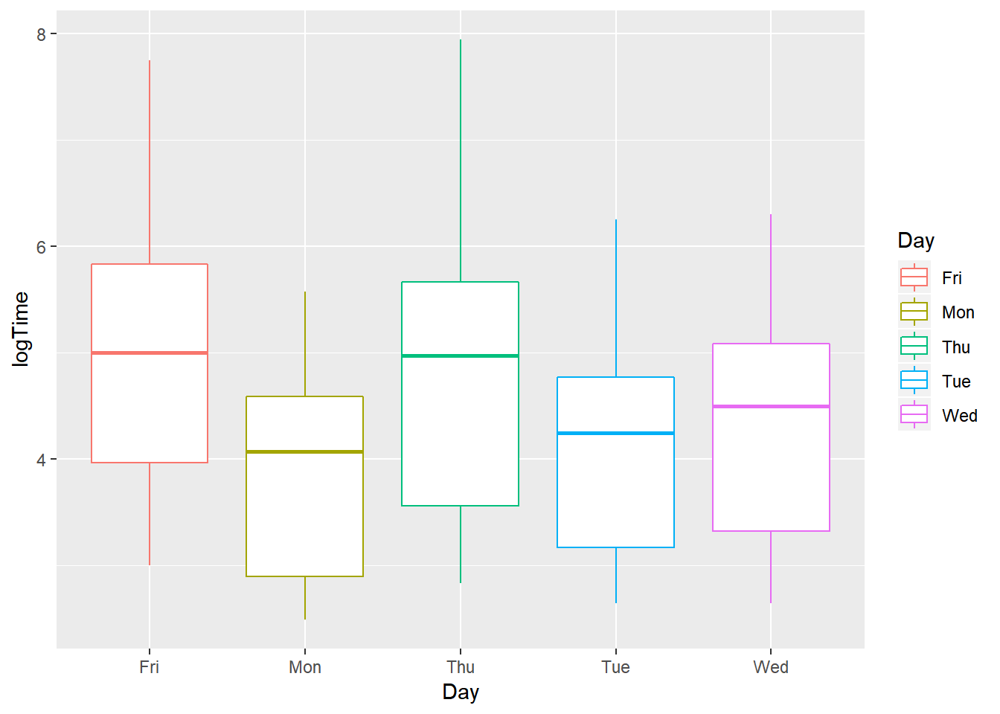

2 Part I
2.1 KenKen
2.1.1 Analysis
First, the following packages must be loaded in order for us to use functions from those packages to analyze this dataset.
library(tidyverse)
library(readxl)
library(ggplot2)
library(mosaic)
library(knitr)Next, I read in the data file and rename it as “KenKen”
KenKen <- read_excel("Q:/mathematics/Courses/Andrews/Data 229/Projects/KenKen/KenKen Solution Times for Obed and Doug.xlsx")2.1.1.1 Solution Time
Since the solution time is recorded as 2 variables (Minutes and Seconds), it is easier to analyze if we state the time in terms of seconds.
KenKen <- KenKen %>%
mutate(Time = Minutes*60 + Seconds) KenKen %>%
ggplot(size = 0.05) +
geom_histogram(mapping = aes(Time), na.rm = TRUE, color = "black", fill = "grey")## `stat_bin()` using `bins = 30`. Pick better value with `binwidth`.
The distribution of solution times is strongly skewed to the right, so it might be easier to analyze by transforming the Time variable using a log transformation.
A new variable called log(Time) is created.
KenKen <- KenKen %>%
mutate(logTime = log(Time))ggplot(data = KenKen, size = 0.05) +
geom_histogram(mapping = aes(logTime), na.rm = TRUE, color = "black", fill = "grey")## `stat_bin()` using `bins = 30`. Pick better value with `binwidth`.
The distribution of solution “log(Time)” looks “kind of” normalish. The mean solution log(Time) is about 4.33 log seconds. The solution log(Time) varies from 2.485 log sec to 7.945 log sec.
kable(favstats(~ logTime, data = KenKen))| min | Q1 | median | Q3 | max | mean | sd | n | missing | |
|---|---|---|---|---|---|---|---|---|---|
| 2.484907 | 3.332205 | 4.369448 | 5.095279 | 7.944847 | 4.330372 | 1.090571 | 852 | 74 |
2.1.1.2 Factors that affect the solution time
2.1.1.2.1 Puzzle’s Size
KenKen %>%
filter(!is.na(Size), !is.na(Time)) %>%
ggplot(mapping = aes(x = Size, y = logTime)) +
geom_boxplot()
Looking at the boxplot, it is easier to recognize that overall, the mean log(time) to complete puzzles of size 4x4 is smaller than 6x6. So the size of the puzzle does have an impact on the solution time. In particular, the smaller the size, the shorter time the solvers use.
2.1.1.2.2 Puzzle’s Solver
KenKen %>%
filter(!is.na(Solver), !is.na(Time)) %>%
ggplot(mapping = aes(x = Solver, y = logTime)) +
geom_boxplot()
Doug is the faster solver, since his mean log(time) is slightly less than Obed’s. But overall, the range of the two solvers’ log(time) are about the same. Obed’s solution log(Time) has 2 outliers.
2.1.1.2.3 Solving Day
KenKen %>%
filter(!is.na(Solver), !is.na(Time)) %>%
ggplot(mapping = aes(x = Day, y = logTime)) +
geom_boxplot()
As the week goes by, the puzzle seems to get harder and harder, as the mean log(Time) increases throughout the week. Friday and Thursday’s mean log(Time) are the two highest among the 5 weekdays - about 6 log(Seconds). This means on those 2 days, it took longer to solve Ken Ken. On the other hand, the mean log(Time) on Monday and Tuesday are lowest, meaning that puzzles were easier and took a shorter time to solve.
2.1.1.3 Conclusion
To sum up, 2 out of the 3 factors listed above have some impact on the solution time:
Size of the puzzle seems to have the biggest impact, as the mean log(Time) of 4x4 is way less than 6x6. The difference between the 2 means is very big, in particular the mean log(Time) for 6x6 is as high as 4x4’s max log(Time).
Day of the week also affects the solution time. On the first 2 days (Monday and Tuesday), the mean log(Time) are the least. Puzzle on those 2 days might be easier than the others and the solving times are quicker. In contrast, the last 2 weekdays (Thursday and Friday) have the greatest mean log(Time). Puzzles were tougher to solve on those 2 days.
Puzzle’s solver looks to be the only factor that have a tiny impact/ or even doesn’t affect the solution time. The 2 mean log(Time) are about the same (though Doug was a little bit faster than Obed). Everything else (range, IQR,…) also looks to be equal.
2.1.1.4 Did the solvers get faster?
KenKen %>%
filter(!is.na(Month), !is.na(logTime)) %>%
ggplot(mapping = aes(x = as.factor(Month), y = logTime)) +
geom_boxplot() +
facet_grid(.~ Year)
Overall, we can see that the solution time doesn’t have any particular trend. Over the course of the 3-semester period between 2011 and 2012, the mean log(Time) just keeps going up, and then down, and then up and down again, sort of like the graph of the sine curve. There were some months that the solution log(Time) is low, for example August 2011 and March 2012, meaning that those months are the fastest solving months. There were also months such as February 2011 and February 2012 where the solution times are the slowest.